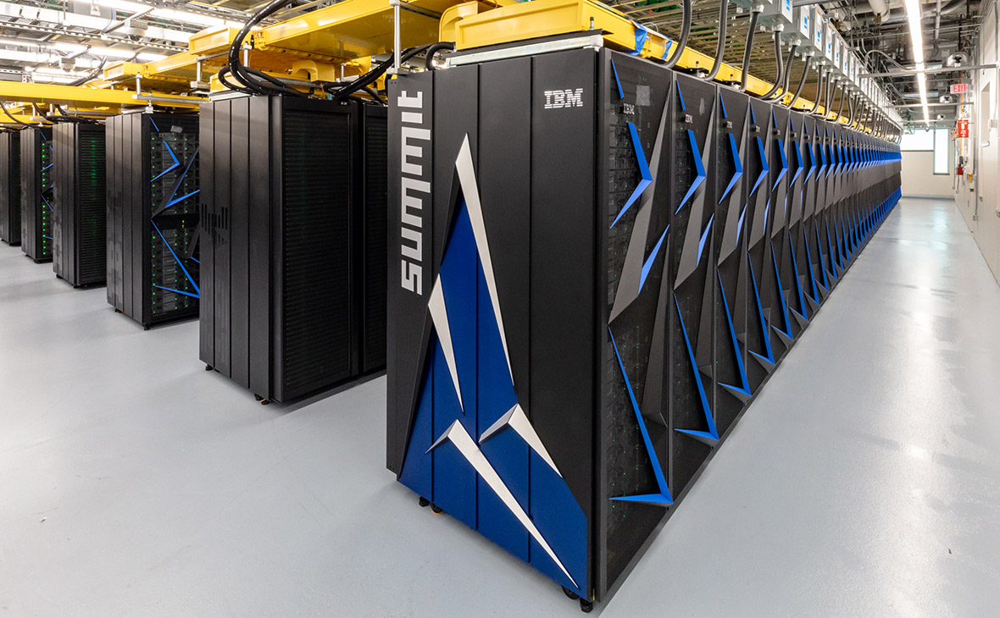

Суперкомпьютер — специализированная вычислительная машина, значительно превосходящая по своим техническим параметрам и скорости вычислений большинство существующих в мире компьютеров.
Как правило, современные суперкомпьютеры представляют собой большое число высокопроизводительных серверных компьютеров, соединённых друг с другом локальной высокоскоростной магистралью для достижения максимальной производительности в рамках реализации распараллеливания вычислительной задачи.

Сейчас:
Перейти к заполнению формы: CLICK
Перейти к редактированию базы данных: CLICK